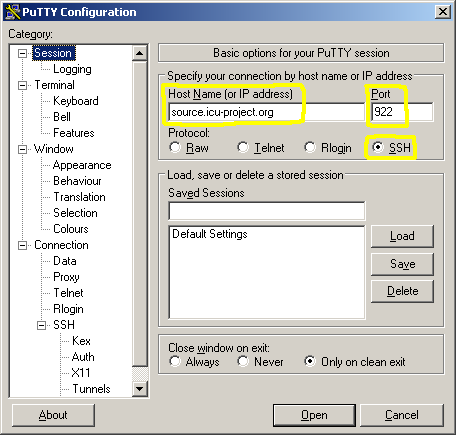

Subversion Setup for Windows
9/28/2006 Andy Heninger
Here are the steps for configuring access from Windows to the ICU Subversion repository:
- Install putty
- Configure putty for accessing v.icu-source.org
- Install the Subversion command line client
- Test Subversion
- [optional] Install a GUI client.
Install Putty
Putty is a Windows ssh program. Subversion will use it for talking ssh protocol
to the server at icu-project.org.
If you don't already have putty installed, get it from http://the.earth.li/~sgtatham/putty/latest/x86/putty-0.58-installer.exe
After installation, add the putty install directory, typically c:\program files\putty, to your System Path.
Important:
The putty directory really does need to be in your System Path
for the rest of the setup described below to work. The installer
does not do this for you.
Configure Putty to access v.icu-project.org
Run putty. At a command prompt,
c:> putty
A configuration dialog should open. Set up as shown below. Only the circled settings need to be changed.

Specify your own login name for icu-project.org, not mine! This
is the same login name you use to access the ICU CVS server.
Specify your private key file for icu-project.org. This is the
same key file that you use to access the ICU CVS server.

Save the putty configuration.
Then click the "open" button. If you get a security alert
regarding the server's host key not being cached in the registry,
respond with YES.

Putty should connect to the server.
If you get a password prompt rather
than a successful login, something is wrong in the putty setup.
It must be fixed before proceeding further.
Install the Subversion command line based client
- Download Win32 subversion binaries here:
http://subversion.tigris.org/servlets/ProjectDocumentList?folderID=91
svn-1.3.2-setup.exe is the file to get.
- Install. Subversion installs with a normal Windows installer setup wizard.
After installation, from a command line try
svn --help
to verify that the install worked. (a pre-existing command
windows may not see a new installation, if it doesn't work try opening
a new command window)
- Configure subversion for ssh.
The svn configuration file is in the Applications Data directory, and will have a path of this form:
C:\Documents and Settings\<your Windows login name>\Application Data\Subversion\config
Using any normal editor, add this line to the [tunnels] section of the file:
ssh = $SVN_SSH plink.exe
Note: with this setup, when subversion asks for "v.icu-project.org",
the request will go to plink.exe, which will look for a saved putty
configuration of that name ("v.icu-project.org"), and access whatever server machine
that configuration indicates. There is no requirement that the
saved putty configuration name match the host name that will be
accessed, but it keeps things less confusing if they are the same.
Another note: it's supposed to be possible to specify the full path the
plink.exe in the configuration file, and avoid having to add the putty
directory to the system's PATH environment variable, but it didn't work
for me.
Test Subversion Server Access
Make a test directory and try a checkout.
C:\>mkdir svntest
C:\>cd svntest
C:\svntest>svn co svn+ssh://v.icu-project.org/repos/icu/icu4j/trunk icu4j
A icu4j\eclipseTestArgs.txt
A icu4j\readme.html
A icu4j\license.html
A icu4j\src
A icu4j\src\com
A icu4j\src\com\ibm
A icu4j\src\com\ibm\icu
A icu4j\src\com\ibm\icu\impl
A icu4j\src\com\ibm\icu\impl\LRUMap.java
[snipped the rest]
From the command,
svn co svn+ssh://v.icu-project.org/repos/icu/icu4j/trunk icu4j
ssh is vectored off to plink.exe by line that was added to the config file.
v.icu-project.org must be the name of a saved session in Putty.
GUI Client
A quick search shows that there are many free SVN GUI
clients out there. Most appear to be immature at best.
TortoiseSVN looks pretty good, although it's Windows only.
http://www.tortoisecvs.org/